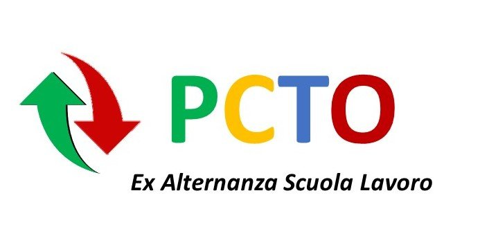
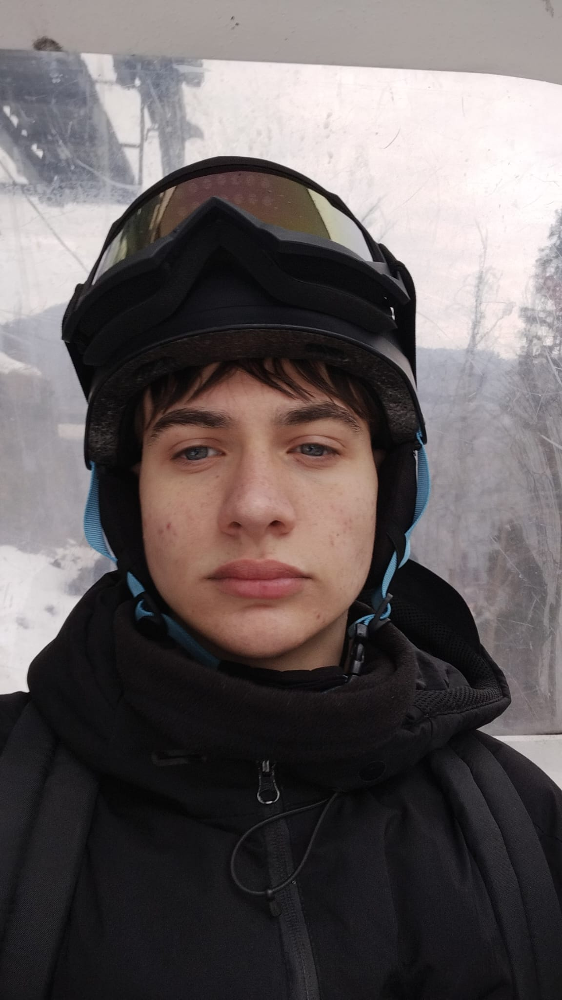
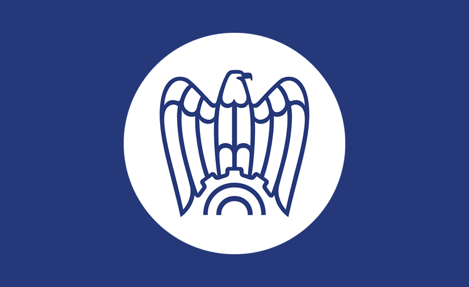
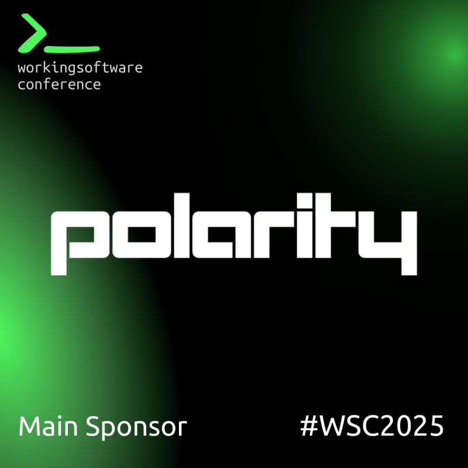
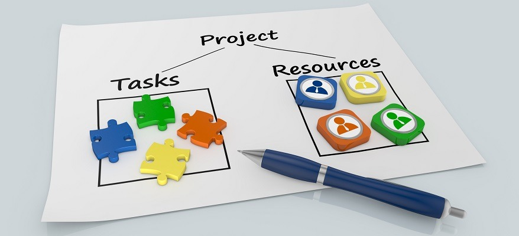
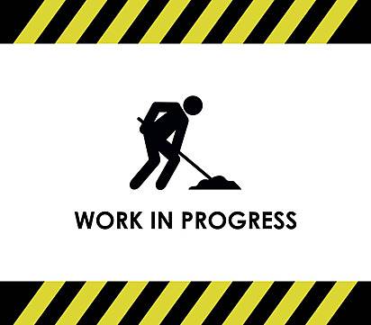

/* Terzo Anno */




Benvenuto nel mio portfolio. Nato in Moldavia. Stanziato in Italia. Appassionato di web development, design e musica





Presentazione degli studenti di quinta dei propri progetti finali
Vedi Dettagli
Descrizione in fase di definizione. Questo spazio ospiterà l'elaborato finale del mio percorso scolastico.